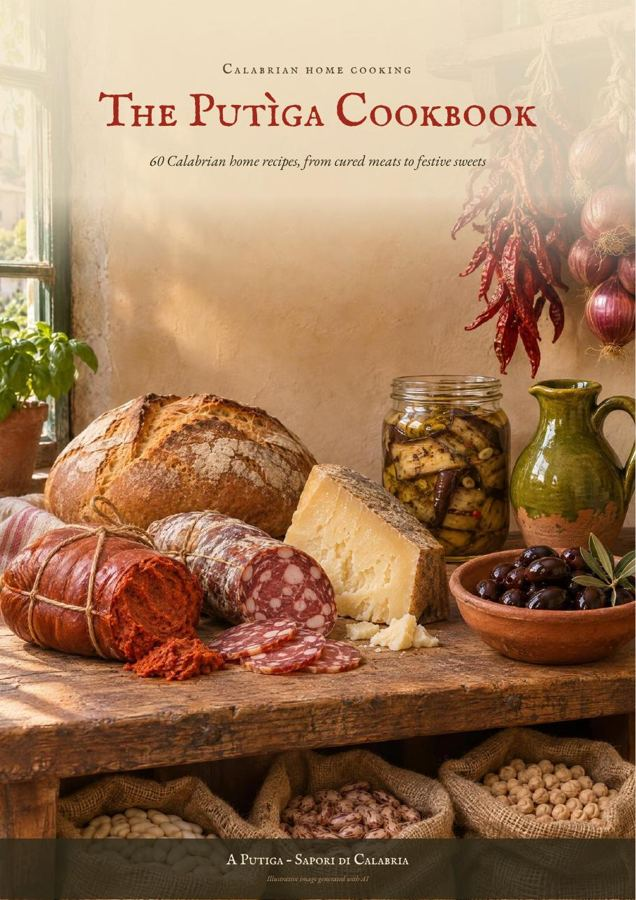
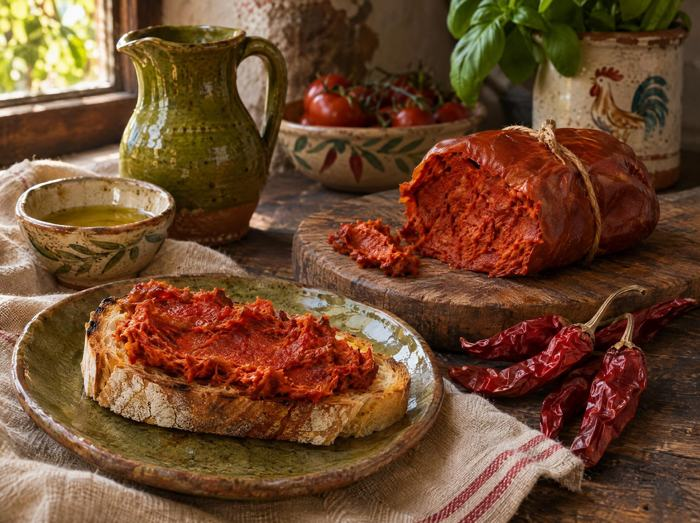
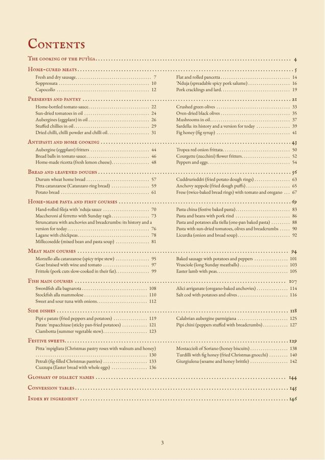
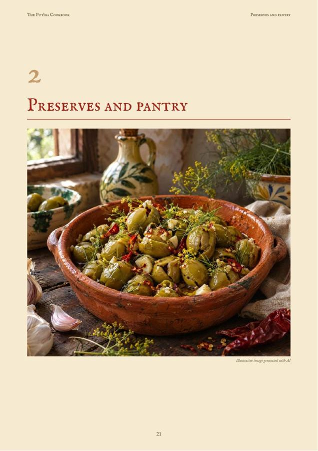

The Putìga Cookbook
60 Calabrian home recipes, from cured meats to festive sweets
Southern Italian home cooking from Calabria, explained step by step: from pork-curing days to late-summer preserves, from hand-rolled pasta to Christmas and Easter sweets.
- 60 recipes in 9 chapters
- 150 full-colour A4 pages
- 32 MB PDF
- US cups, oz and °F included



What's inside
Recipes that work the first time
Metric quantities with US measures in brackets, numbered steps with one action at a time, and the signs to look for: colour, smell, texture, temperature.
Cured meats and preserves, made safely
The preserves follow the Italian National Institute of Health guidelines. The cured meats explain curing salt, pH and weight loss. Old methods that are no longer safe are told as history.
Everything around the recipe
For every recipe: tips, common mistakes, local variations, storage, substitutions for cooks outside Italy, EU allergens, PDO and PGI products, a Calabrian DOC wine.
Glossary and indexes
Clickable contents, a glossary of dialect names, conversion tables and an index by ingredient.
Look inside




All the recipes
Home-cured meats 6
- Fresh and dry sausage
- Soppressata
- Capocollo
- Flat and rolled pancetta
- 'Nduja (spreadable spicy pork salume)
- Pork cracklings and lard
Preserves and pantry 10
- Home-bottled tomato sauce
- Sun-dried tomatoes in oil
- Aubergines (eggplant) in oil
- Stuffed chillies in oil
- Dried chilli, chilli powder and chilli oil
- Crushed green olives
- Oven-dried black olives
- Mushrooms in oil
- Sardella: its history and a version for today
- Fig honey (fig syrup)
Antipasti and home cooking 6
- Aubergine (eggplant) fritters
- Bread balls in tomato sauce
- Home-made ricotta (fresh lemon cheese)
- Tropea red onion frittata
- Courgette (zucchini) flower fritters
- Peppers and eggs
Bread and leavened doughs 6
- Durum wheat home bread
- Pitta catanzarese (Catanzaro ring bread)
- Potato bread
- Cuddrurieddri (fried potato dough rings)
- Anchovy zeppole (fried dough puffs)
- Frese (twice-baked bread rings) with tomato and oregano
Home-made pasta and first courses 10
- Hand-rolled fileja with 'nduja sauce
- Maccheroni al ferretto with Sunday ragù
- Struncatura with anchovies and breadcrumbs: its history and a version for today
- Lagane with chickpeas
- Millecosedde (mixed bean and pasta soup)
- Pasta china (festive baked pasta)
- Pasta and beans with pork rind
- Pasta and potatoes alla tiella (one-pan baked pasta)
- Pasta with sun-dried tomatoes, olives and breadcrumbs
- Licurdia (onion and bread soup)
Meat main courses 6
- Morzello alla catanzarese (spicy tripe stew)
- Goat braised with wine and tomato
- Frittole (pork cuts slow-cooked in their fat)
- Baked sausage with potatoes and peppers
- Vrasciole (long Sunday meatballs)
- Easter lamb with peas
Fish main courses 5
- Swordfish alla bagnarota
- Stockfish alla mammolese
- Sweet and sour tuna with onions
- Alici arriganate (oregano-baked anchovies)
- Salt cod with potatoes and olives
Side dishes 5
- Pipi e patate (fried peppers and potatoes)
- Patate 'mpacchiuse (sticky pan-fried potatoes)
- Ciambotta (summer vegetable stew)
- Calabrian aubergine parmigiana
- Pipi chini (peppers stuffed with breadcrumbs)
Festive sweets 6
- Pitta 'mpigliata (Christmas pastry roses with walnuts and honey)
- Petrali (fig-filled Christmas pastries)
- Cuzzupa (Easter bread with whole eggs)
- Mostaccioli of Soriano (honey biscuits)
- Turdilli with fig honey (fried Christmas gnocchi)
- Giurgiulena (sesame and honey brittle)
Who it's for
For Italian-Americans and anyone with Calabrian roots who wants to cook the dishes of home, and for every cook who loves Italian regional food and wants precise recipes, with no shortcuts and no made-up secrets.
Price
$14.99
Buy the PDFSecure payment on the sales platform. You get the download link straight away.
Questions
How do I get the book?
After payment you get a link to download the PDF, also by email. Read it on a computer, tablet or phone.
Can I print it?
Yes, it is laid out on A4 pages, for personal use.
Are the photos real?
No. The images are illustrations generated with artificial intelligence, and each caption says so. The texts and recipes were written for this book.
Is there an Italian edition?
Yes, there is a separate Italian edition.
Can I get a refund?
Digital content delivered immediately is not covered by the EU right of withdrawal. See the terms of sale for details.